// Una Riga di Codice
Sezione 00. Il fatto| 1 2 3 4 5 |
from kittentts import KittenTTS model = KittenTTS("KittenML/kitten-tts-nano-0.8-int8") audio = model.generate("Smonto cose, studio come funzionano e scrivo quello che trovo.", voice="Jasper") import soundfile as sf sf.write("output.wav", audio, 24000) |
Esce un WAV a 24kHz. La voce suona come un umano. Il modello pesa 25MB. Non serve GPU. Non serve internet dopo il primo download. Non serve niente.
KittenTTS. 12,000 stelle su GitHub. Apache 2.0. Pubblicato nell'agosto 2025. Aggiornato ieri.
Ho fatto play. Poi ho chiuso il terminale. Poi l'ho riaperto e mi sono chiesto: come cazzo fa?
Questa è la storia di come ho smontato 25 megabyte per capire come ci sta una voce umana dentro.
Tesi. KittenTTS è un modello StyleTTS 2 a cui hanno rimosso la diffusion, il discriminatore WavLM, gli encoder di stile. Tutto quello che serviva per il training. Funziona perché il lavoro pesante è stato fatto offline: gli style vector sono stati estratti con il modello completo e poi congelati in un file numpy. Quello che resta a runtime sono 15 milioni di parametri in un ONNX e 8 voci pre-calcolate. Smontarlo dal basso verso l'alto mostra cosa serve davvero per generare voce, e cosa era impalcatura. Il fatto che il risultato stia in 25MB, offline, senza log, senza API, cambia le regole su cosa significa fidarsi di un audio.
// Il Percorso del Testo
Sezione 01. Dal carattere al fonemaPrima di aprire il modello, seguo il codice. Parto da generate() e vedo dove finisce il testo prima di toccare la rete neurale.
Il percorso ha quattro passaggi. Ognuno taglia qualcosa.
Il TextPreprocessor
Il file preprocess.py è 400 righe di regex. È la parte più grande del codice, più grande del modello stesso. Converte $85K in "eighty five thousand dollars", 3:30pm in "three thirty pm", 192.168.1.1 in "one nine two dot one six eight dot one dot one". Gestisce numeri romani, notazione scientifica, frazioni, decadi, numeri di telefono americani.
Un intero modulo di NLP classico, nessuna rete neurale, solo per trasformare il testo in qualcosa che espeak possa pronunciare. Il 90% del codice Python di KittenTTS non ha niente a che fare con il deep learning.
espeak e il dizionario IPA
Il testo pulito passa per phonemizer.backend.EspeakBackend con lingua en-us, preservazione della punteggiatura e stress marks. Esce IPA: ðɪs ɪz nˌɑːt ɐ hjˈuːmən vˈɔɪs.
Poi un TextCleaner mappa ogni carattere IPA a un intero. Il dizionario ha 178 simboli: 26 lettere ASCII, punteggiatura, e l'intero alfabeto IPA con diacritici. L'input del modello è un array di interi con un token di start (0) e end (10) aggiunti a mano.
| 1 2 3 4 5 6 7 8 |
# Da _prepare_inputs(): il cuore della tokenizzazione phonemes_list = self.phonemizer.phonemize([text]) phonemes = basic_english_tokenize(phonemes_list[0]) phonemes = ' '.join(phonemes) tokens = self.text_cleaner(phonemes) tokens.insert(0, 0) # start token tokens.append(10) # end token tokens.append(0) # padding |
A questo punto il testo è un vettore di interi. Il modello non vedrà mai la parola "voice". Vedrà una sequenza di ID che corrispondono ai fonemi IPA. Il significato semantico esplicito non c'è più. Ma la struttura linguistica resta codificata nella sequenza: l'ordine dei fonemi, gli stress marks, la punteggiatura. Il modello non sa cosa stai dicendo, ma sa come si dice qualcosa con quella struttura prosodica.
// Le Voci Sono Vettori
Sezione 02. Dentro il .npzQuesta è la parte che mi ha fermato.
Le 8 voci di KittenTTS (Bella, Jasper, Luna, Bruno, Rosie, Hugo, Kiki, Leo) non sono modelli separati. Non sono file audio di riferimento. Non sono configurazioni. Sono matrici in un file voices.npz.
| 1 2 3 4 5 6 |
import numpy as np voices = np.load("voices.npz") for key in voices.files: v = voices[key] print(f"{key}: shape={v.shape}, dtype={v.dtype}") # expr-voice-2-f: shape=(400, 256), dtype=float32 |
Ogni voce è una matrice 2D: 400 vettori di stile da 256 dimensioni ciascuno. La prima dimensione (400) è indicizzata per lunghezza del testo. La seconda (256) è la dimensione dello style vector.
E qui c'è la riga che spiega tutto:
| 1 | ref_id = min(len(text), self.voices[voice].shape[0] - 1) |
Lo stile della voce cambia in funzione della lunghezza del testo. Frase corta → stile diverso da frase lunga. Non è un singolo "timbro". È un continuo di stili parametrizzato sulla lunghezza dell'input.
Perché? Perché quando parli una frase corta, la prosodia è diversa da una frase lunga. L'intonazione cambia. Il ritmo cambia. E questi vettori catturano esattamente quello: non solo chi parla, ma come parla in funzione di quanto deve dire.
Implicazione. Una voce non è un punto nello spazio latente. È una curva. Ogni voce è una traiettoria di 512 punti in uno spazio a 256 dimensioni, e il modello la percorre in base a quanti caratteri gli dai in input.
Distanze nello spazio latente
Ho estratto il vettore medio di ogni voce e calcolato la distanza coseno tra tutte le coppie. Il risultato è una matrice 8x8 che racconta chi somiglia a chi.
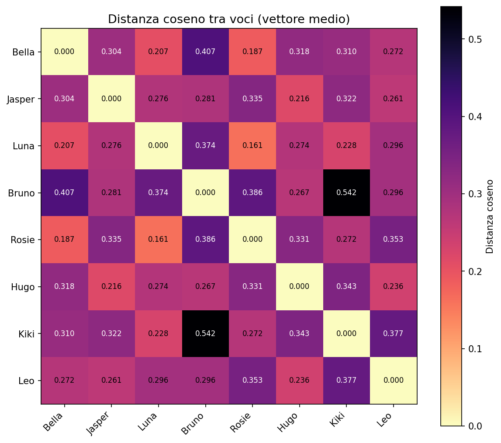
Le voci femminili (Bella, Luna, Rosie, Kiki) formano un cluster. Le maschili (Jasper, Bruno, Hugo, Leo) un altro. Ma dentro ogni cluster le distanze non sono uguali. Alcune voci sono quasi sovrapposte, altre divergono. Non è un semplice switch M/F. Ci sono sfumature di timbro, velocità, energia che il vettore cattura.
t-SNE: la mappa delle voci
Ho preso un campione di style vectors per ogni voce (uno ogni 5 posizioni) e li ho proiettati in 2D con t-SNE.
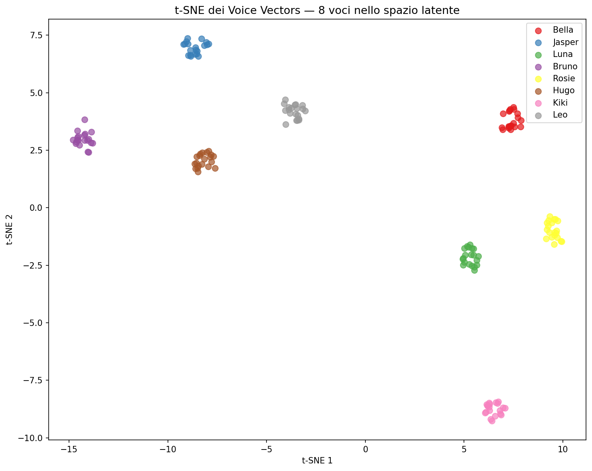
Ogni voce forma un cluster distinto. Ma i cluster non sono sfere, sono allungati, perché i vettori cambiano lungo la dimensione della lunghezza. La voce non è un punto. È una traiettoria.
Ascolta. Stessa frase, 8 voci diverse, stesso modello da 80MB:
Interpolazione
Se le voci sono vettori, cosa succede se ne mischi due?
Ho preso Bella (femminile) e Jasper (maschile), e ho generato 7 step di interpolazione lineare nello spazio latente: 100% Bella, 83/17, 67/33, 50/50, 33/67, 17/83, 100% Jasper.
| 1 2 3 |
# L'interpolazione è banale: è uno spazio vettoriale alpha = 0.5 style_mix = (1.0 - alpha) * style_bella + alpha * style_jasper |
Ascolta la transizione, da Bella a Jasper in 7 step:
Funziona. La transizione è graduale. A 50/50 non senti un artefatto. Senti una voce che non esiste, a metà tra le due. Lo spazio latente è liscio. Le voci sono continue.
Questo significa una cosa precisa: puoi creare infinite voci sintetiche che non corrispondono a nessun parlante reale. Non stai clonando. Stai inventando.
// Dentro l'ONNX
Sezione 03. Il grafo computazionaleIl modello è un file .onnx. ONNX è un formato aperto per reti neurali: un grafo diretto aciclico di operazioni. Puoi aprirlo, contare i nodi, misurare i pesi, ricostruire l'architettura senza documentazione.
L'ho fatto sulle 4 varianti.
Il nano FP32 ha gli stessi 15M parametri del nano INT8 ma pesa il doppio: 56MB contro 25MB. La differenza è la quantizzazione. Ogni peso passa da 32 bit (float32) a 8 bit (int8). La precisione scende, la dimensione crolla.
Input e output del grafo
Il modello ONNX ha tre input:
| Input | Shape | Tipo | Cosa rappresenta |
|---|---|---|---|
input_ids |
[1, N] | int64 | Sequenza di token IPA |
style |
[1, 256] | float32 | Vettore di stile dalla voce |
speed |
[1] | float32 | Moltiplicatore velocità |
Un output: il waveform raw. Nessun mel spectrogram intermedio. Il modello va direttamente dai fonemi al segnale audio.
Le operazioni nel grafo
Dentro il grafo ONNX trovi la firma dell'architettura. Ho contato i nodi per tipo di operazione. I più frequenti raccontano cosa fa il modello:
Conv: convoluzioni 1D. Sono il cuore del decoder. Trasformano le rappresentazioni interne in segnale audio. La maggior parte dei parametri sta qui.
Mul, Add: ovunque. Sono le operazioni di Adaptive Instance Normalization (AdaIN). Lo style vector non entra nel modello come input aggiuntivo, viene iniettato dopo ogni blocco convoluzionale via AdaIN. Lo stile modula il segnale, non lo genera.
Sin: la snake activation function. Non è una ReLU, non è una GELU. È x + sin(x)^2 / a. Usata specificamente nei vocoder neurali perché preserva la struttura periodica del segnale audio. Se usi ReLU su un waveform, lo ammazzi. La snake lo rispetta.
STFT/iSTFT: la firma del decoder iSTFTNet. Il modello non genera il waveform campione per campione. Genera magnitudine e fase nello spazio frequenziale (STFT), poi ricostruisce il segnale con la trasformata inversa (iSTFT). È molto più veloce di HiFi-GAN, che genera campione per campione.
Architettura ricostruita. Senza documentazione, dal solo grafo ONNX: text encoder convoluzionale → duration predictor → upsampling → decoder con AdaIN (stile iniettato) e snake activation → iSTFTNet output. Il modello predice durate fonemiche, allinea i fonemi nel tempo, e genera il segnale nello spazio frequenziale. Non c'è attention mechanism. Non c'è transformer. Solo convoluzioni e lo stile che modula tutto.
// Cosa Perde l'INT8
Sezione 04. Il prezzo della compressioneStessa frase, stessa voce, 4 modelli diversi. Ho generato lo stesso input con mini (80M), micro (40M), nano FP32 (15M) e nano INT8 (15M quantizzato) e confrontato i mel spectrogram.
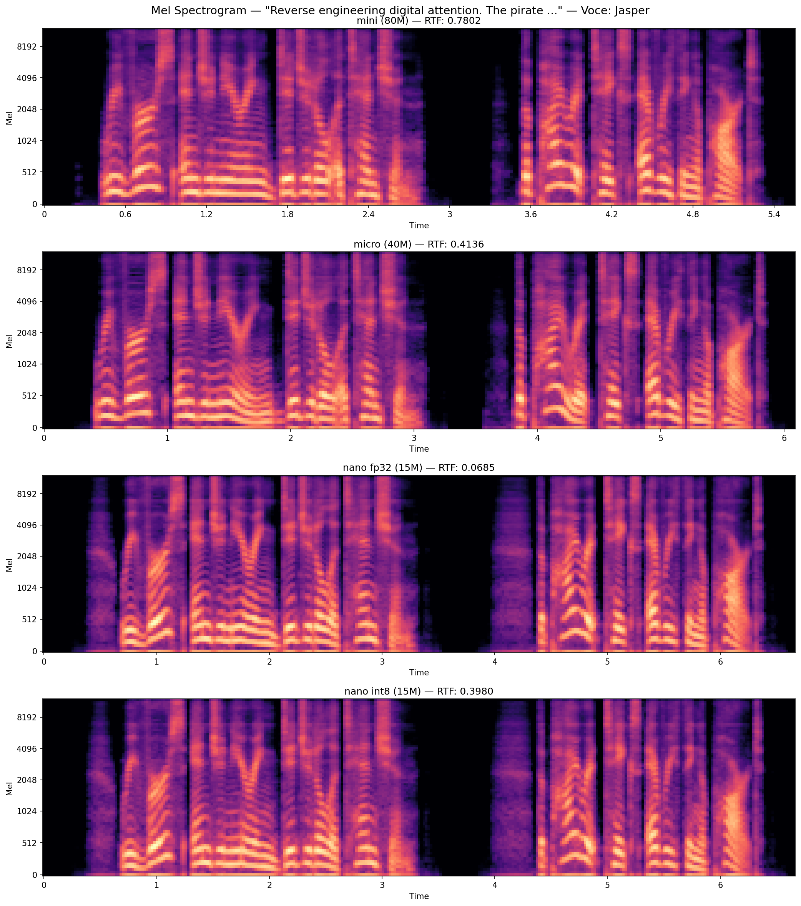
Il mini e il micro sono quasi identici. Il nano FP32 perde dettaglio nelle frequenze alte. Le armoniche sopra i 6kHz sono più sfumate. Il nano INT8 perde ancora qualcosa. Le transizioni tra fonemi sono meno nette, il segnale è leggermente più "impastato".
Ma ad orecchio? La differenza tra mini e nano INT8 è sottile. Su un laptop speaker non la senti. Su cuffie buone, forse. Il punto è che 25MB bastano per ingannare un orecchio non addestrato.
La differenza spettrale
Ho calcolato la differenza assoluta in dB tra il mel spectrogram del mini e quello del nano INT8, frame per frame.
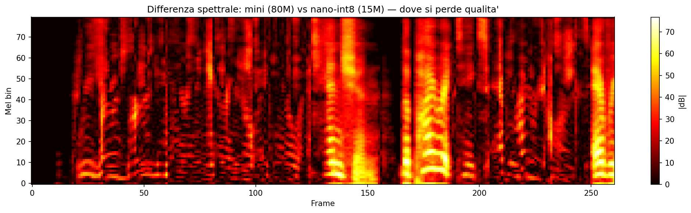
La perdita non è uniforme. Si concentra nelle alte frequenze e nelle transizioni. Le vocali stabili sono preservate quasi perfettamente. I tratti stazionari del segnale sono facili da comprimere. Le consonanti fricative (s, f, th) e le esplosive (t, k, p) soffrono di più. Ha senso: i transienti sono le parti del segnale con più entropia, e la quantizzazione taglia esattamente lì.
Il punto non è la qualità. Il punto è che a 25MB la qualità è sufficiente. Non per un audiobook. Non per una voce narrante professionale. Ma per una telefonata, un messaggio vocale, un deepfake veloce. Più che sufficiente. È questo il problema.
// Il Benchmark
Sezione 05. Quanto ci metteHo misurato il tempo di generazione su frasi di lunghezza crescente, per tutte e 4 le varianti. Su un MacBook, CPU only, media di 3 run.
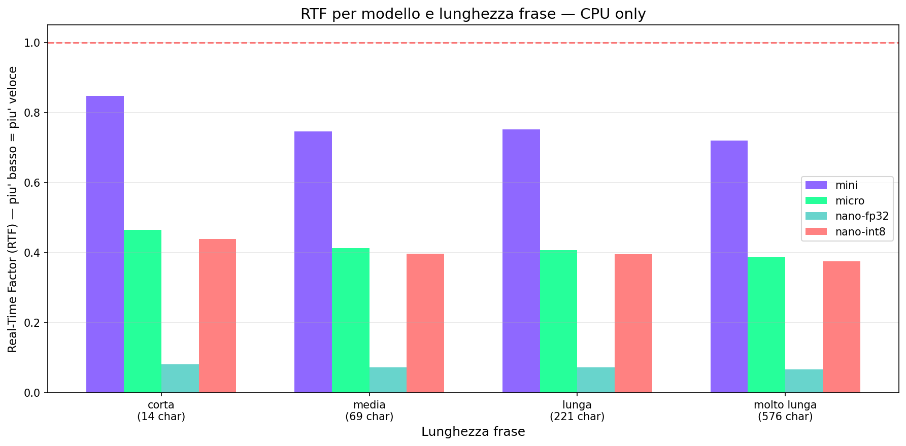
Il Real-Time Factor (RTF) è il rapporto tra tempo di generazione e durata dell'audio prodotto. RTF < 1 significa che il modello genera più velocemente del tempo reale.
Il nano INT8 su frasi medie ha RTF intorno a 0.02, genera audio 50 volte più veloce del tempo reale. Anche il mini (80M parametri) resta ampiamente sotto 1. Su CPU.
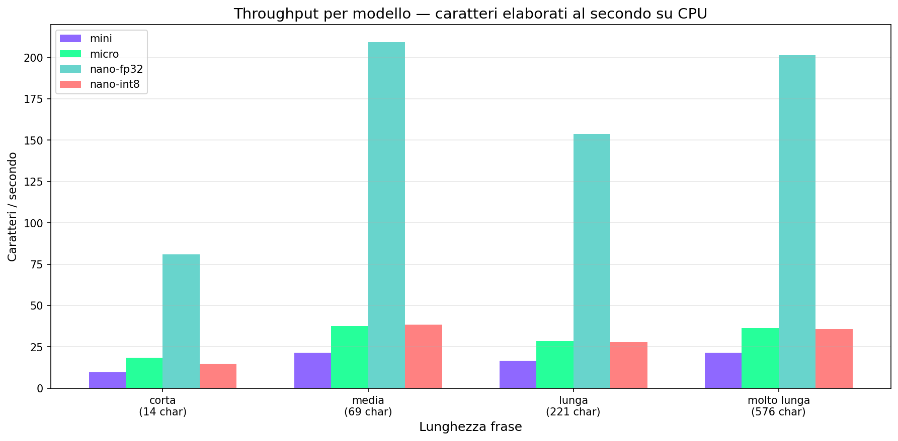
Il throughput scala linearmente con la lunghezza della frase. Il chunking a 400 caratteri introduce overhead sulle frasi lunghe, ma il modello resta real-time per qualsiasi testo ragionevole.
| Modello | Parametri | Size | RTF (frase media) | Note |
|---|---|---|---|---|
| Mini | 73M | 74.6 MB | 0.78 | Qualità massima |
| Micro | 35M | 39.5 MB | 0.41 | Miglior rapporto qualità/speed |
| Nano FP32 | 14M | 54.1 MB | 0.07 | Più grande del INT8 (float32) |
| Nano INT8 | 14M | 23.2 MB | 0.40 | Minimo assoluto |
Contesto: gli altri TTS leggeri
KittenTTS non è l'unico TTS che gira su CPU. Per capire dove si posiziona, serve un confronto onesto con le alternative.
VITS (2021): il primo modello end-to-end che unisce text encoder, flow-based decoder e vocoder in un'unica rete. Qualità eccellente, ma il modello base pesa ~150MB e richiede PyTorch a runtime. Non è pensato per edge.
Bark (Suno, 2023): generativo, può fare musica, effetti sonori, risate. Molto espressivo. Ma pesa 5GB+, richiede GPU per tempi ragionevoli, e la qualità è imprevedibile. A volte sorprendente, a volte incomprensibile.
XTTS (Coqui, 2023): multilingual, voice cloning con 6 secondi di audio. Qualità alta. Ma il modello pesa ~1.8GB e l'inferenza su CPU è lenta (RTF > 1 su frasi lunghe).
Piper (Rhasspy, 2023): ONNX, leggero, pensato per Raspberry Pi. Modelli da 15-60MB. Qualità inferiore a KittenTTS, suona più robotico, specialmente sulle transizioni. Ma è il riferimento per edge TTS fino a ora.
KittenTTS si inserisce in un punto preciso: qualità vicina a XTTS, dimensioni vicine a Piper. È uno dei primi modelli sotto i 30MB che suona credibilmente umano su CPU. Non è il migliore in assoluto, è il migliore per quello che pesa.
// Ora Risaliamo al Paper
Sezione 06. Da dove viene tutto questoSolo adesso, dopo aver smontato il modello, apro il paper. StyleTTS 2, NeurIPS 2023, Columbia University. Il primo modello text-to-speech a raggiungere qualità umana su dataset pubblici.
L'architettura originale è un mostro. Otto moduli. Due fasi di addestramento. Quattro GPU A40.
Cosa c'è in StyleTTS 2
Style Diffusion. Il cuore del modello originale. Lo stile vocale è modellato come una variabile latente casuale, campionata tramite un processo di diffusione condizionato sul testo. Un transformer a 3 layer con dynamics di Langevin e EDM formulation. Tre step di diffusione bastano per campionare uno style vector di alta qualità, equivalente a 9 layer di transformer in termini di computazione.
Due Style Encoder. Non uno. Due. Uno acustico (cattura il timbro dal mel spectrogram) e uno prosodico (cattura ritmo e intonazione). Servono insieme perché uno solo crea instabilità durante il training. I gradienti divergono se lo stesso encoder deve codificare sia il timbro che la prosodia.
WavLM Discriminator. Un modello pre-addestrato da 300M+ parametri (WavLM-base-plus, 12 layer, addestrato su 94k ore di audio) usato come discriminatore adversariale. Non viene fine-tunato, resta congelato. Un CNN discriminative head estrae feature da tutti i 13 layer e decide se l'audio è reale o sintetico. L'idea è che un modello che capisce il linguaggio parlato è il miglior giudice di quanto un audio suoni naturale.
Differentiable Duration Modeling. Il duration predictor predice quanto dura ogni fonema. Ma l'upsampling (espandere la sequenza fonemica nella sequenza temporale) non è differenziabile con i metodi classici. StyleTTS 2 introduce un upsampler non-parametrico basato su kernel gaussiani che rende tutto il pipeline differenziabile end-to-end. Questo permette di ottimizzare con il loss adversariale di WavLM, che è la chiave della qualità.
Decoder E2E. Due opzioni: HiFi-GAN (waveform diretto) e iSTFTNet (magnitudine + fase → iSTFT). Il secondo è più veloce. Entrambi usano snake activation e AdaIN per iniettare lo stile.
Cosa hanno tolto in KittenTTS
Ora il confronto. Tutto quello che ho trovato smontando l'ONNX contro quello che dice il paper.
| Componente | StyleTTS 2 | KittenTTS | Impatto |
|---|---|---|---|
| Style Diffusion | Transformer 3-layer, Langevin | Rimosso: stili pre-calcolati in .npz | Niente diversità runtime. Stili congelati. |
| Acoustic Style Encoder | Encoder da mel spectrogram | Rimosso: non serve, stili già estratti | Niente reference audio a runtime |
| Prosodic Style Encoder | Encoder separato per prosodia | Rimosso: prosodia nel .npz | Prosodia fissa per voce |
| WavLM Discriminator | 300M+ params, 12 layer | Rimosso: solo training | -300M params a inference |
| Prosodic Text Encoder | BERT phoneme-level | Rimosso: solo training | Contesto linguistico perso |
| Duration Predictor | Differentiable upsampling | Presente | Predice durate a runtime |
| Decoder iSTFTNet | Conv + snake + AdaIN + iSTFT | Presente | Genera il waveform |
| Text Encoder | Conv-based acoustic encoder | Presente | Codifica la sequenza fonemica |
Il pattern. Hanno tenuto solo quello che serve a inference: text encoder, duration predictor, decoder. Tutto il resto (diffusion, encoder di stile, discriminatore, BERT) serviva solo per il training. Gli stili sono stati estratti con il modello completo e poi congelati nel .npz. Il modello a runtime non inventa stili nuovi. Legge quelli pre-calcolati e genera il waveform. Non è che "funziona senza quei componenti". È che quei componenti hanno già fatto il loro lavoro, e il risultato è stato salvato. Il costo si paga una volta, a training time. Il beneficio si usa per sempre, a inference.
L'ablation study del paper conferma: senza style diffusion, il CMOS scende di 0.46. Senza WavLM discriminator, -0.32. Senza prosodic style encoder, -0.35. Ma KittenTTS non soffre di queste perdite allo stesso modo, perché gli stili sono stati estratti con il modello completo e poi congelati. Il training ha usato tutto. L'inferenza no.
Non è knowledge distillation classica, dove un modello piccolo impara a imitare uno grande. È più diretto: prendi il modello completo, lo fai girare sulle voci target, salvi gli style vector prodotti dai suoi encoder, e poi a runtime usi solo il decoder con quegli style vector come input fisso. Il training ha prodotto il contenuto. L'inference lo consuma.
Questa non è compressione del modello. È compressione del processo di training.
// Il Lab
Sezione 07. Riproduci tuttoSei script Python. Nessuna GPU. Tutto gira su CPU.
| Script | Cosa fa | Output |
|---|---|---|
01_genera_voci.py |
Genera tutte le 8 voci con la stessa frase | 8 file WAV + tabella tempi |
02_ispeziona_onnx.py |
Apre i 4 modelli ONNX, conta nodi, parametri, blocchi | Report architettura completo |
03_voice_vectors.py |
Estrae .npz, t-SNE, matrice distanze, norme per posizione | 3 grafici PNG |
04_interpola_voci.py |
Interpola Bella→Jasper in 7 step | 7 file WAV |
05_confronta_modelli.py |
Genera con 4 varianti, confronta mel spectrogram | Mel confronto + diff spettrale |
06_benchmark.py |
RTF e throughput per modello e lunghezza frase | 2 grafici benchmark |
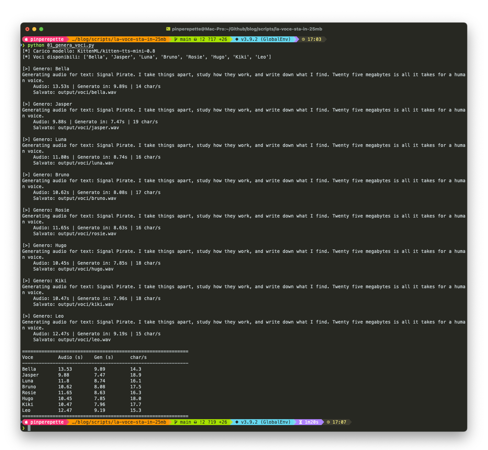
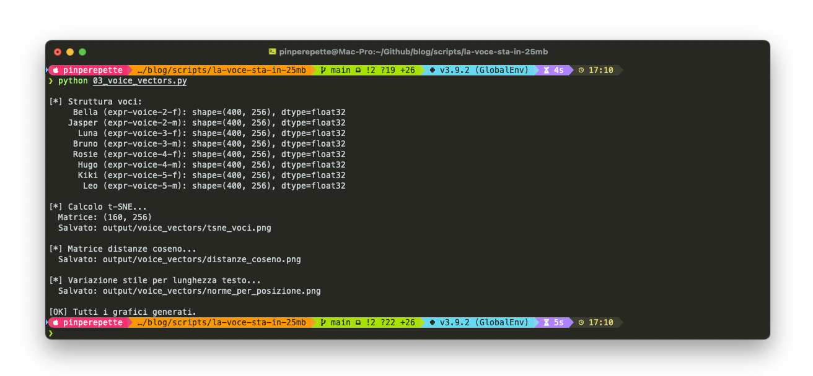
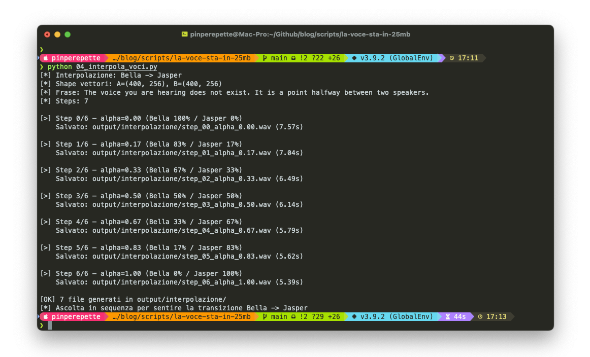
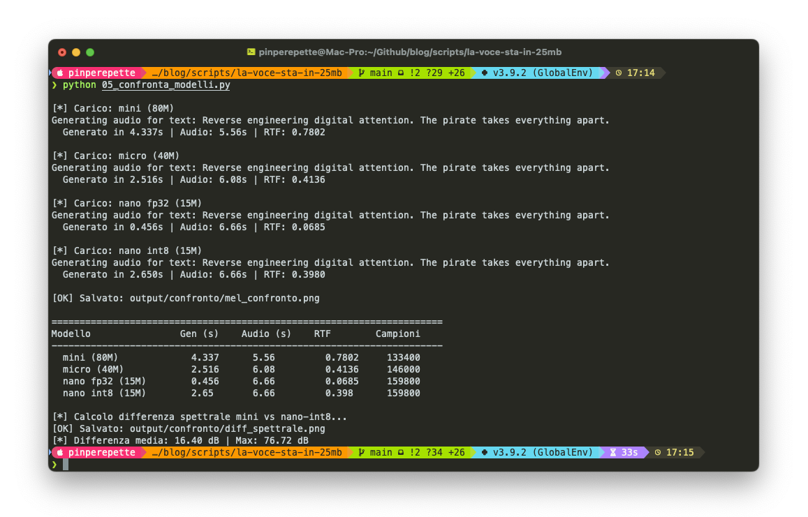
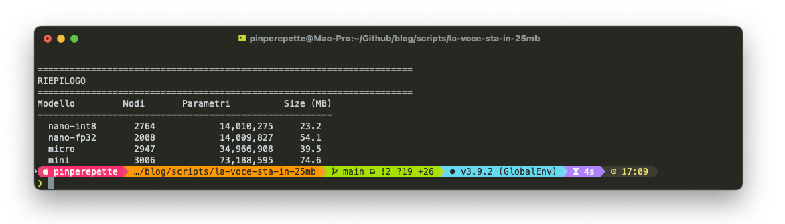
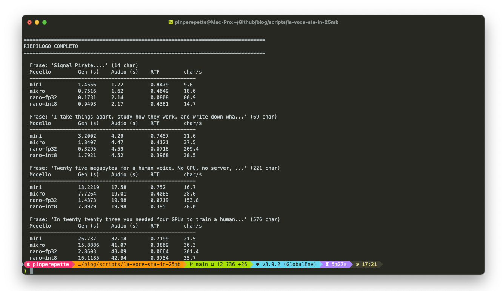
Tutto il codice è su GitHub.
// Conclusione
Fine trasmissioneHo iniziato con un pip install e un file da 25 megabyte. Ho finito con un paper NeurIPS e una domanda su cosa significa fidarsi di un audio.
La cosa più interessante non è la qualità del modello. È quello che hanno tolto. La diffusion, il discriminatore WavLM, gli encoder di stile. Tutti componenti che servivano per il training. Una volta che gli style vector sono stati estratti e congelati nel .npz, l'intera infrastruttura di addestramento diventa superflua. Il modello di inference è una fotocopia del risultato finale, non ha più bisogno del laboratorio che lo ha prodotto.
Il punto tecnico è chiaro: la maggior parte della complessità di un modello generativo serve a imparare, non a generare. KittenTTS lo dimostra in modo brutale.
Il punto pratico è più scomodo. Una voce non era già più una prova affidabile prima di KittenTTS. Il voice cloning esiste da anni: Resemble.AI, ElevenLabs, Tortoise TTS. Ma queste soluzioni richiedevano API cloud, account, log. Lasciavano tracce. KittenTTS no. 25MB su una chiavetta USB, nessuna connessione, nessun log, nessun account. Lo stesso salto che c'è stato tra le deepfake video del 2019 (GPU necessaria, pipeline complessa) e le app one-click del 2023.
Nel febbraio 2024, un dipendente di Arup a Hong Kong ha trasferito 25 milioni di dollari dopo una videochiamata con deepfake del CFO e di altri colleghi. Nel 2025, l'FBI ha segnalato voice cloning usato per truffe ai familiari di funzionari governativi. Questi attacchi usavano strumenti cloud con latenza e costi. Un modello da 25MB che gira offline in tempo reale abbassa la barriera di un altro ordine di grandezza.
Non è che una voce "ha smesso di essere una prova". È che il costo per falsificarne una è sceso sotto la soglia di qualsiasi contromisura basata sulla fiducia implicita. Se accetti un messaggio vocale come autenticazione, hai un problema. Se lo accettavi già prima, adesso il problema è più economico da sfruttare.
È che il costo per farlo è sceso a 25 megabyte e zero tracce."
Le voci sono vettori. I vettori si interpolano. La fiducia va verificata, non assunta.